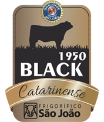

A qualidade da carne em nosso açougue é incomparável, apenas novilhos precoce entram aqui para desmanche. Mas afinal, o que é novilho precoce? Para a carne ser mais macia, alguns bois são alimentados com ração especial e suplementos, confinados, e abatidos até 24 meses.
Tendo como a principal missão ser reconhecido pela qualidade de sua carne, o frigorífico se destaca na maciez, suculência e qualidade da carne. Com carnes de novilho precoce e cheias de marmoreio.
Em 2019 Frigorifico São João criou a marca BLACK 1950, programa interno de seleção das melhores caraças abatidas, que tem como foco acabamento de gordura, precocidade e marmorização das peças, e o 1º frigorífico do Brasil a receber o Certificado da ABCD, Associação Brasileira de Criadores Devon. Raças Britânicas que se destacam por produzir marmoreio interno das fibras, critério muito valorizado pelos consumidores mais exigentes dos cortes prime, pois proporcionam maior maciez, suculência e sabores inigualáveis.